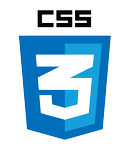

Howdy, World
- My Homepage - dygresje.info; it's divided into three parts: tourism, IT, and miscelanous
- Facebook profile (fanpage) of my homepage: Dygresje.info - now about War Blog (info in frame beside) mainly
- Previous site from 2005, mostly about HTML5 & CSS 2 - redesign? [2005]
- Long article about cryptography Kryptografia praktycznie
- Now I'm learning JavaScript and React - Kursy online z programowania i tworzenia stron
War Blog Festung Breslau 1945
Day by day reporting about war events from 75 years ago:
Festung Breslau 1945 täglich - wojenna kronika zagłady.
T4 Aktion site
Project halted by urgent War Blog, all texts (Polish) are here: github.com/tdudkowski/t4.
After finishing War Blog I'll do the site.
Github projects
Any use of external library is mentioned explicitly in the description.
Layouts
List of layouts - with more contextual information. All layouts are far from being finished. Basic presentation.
- 01 - 2-, and 3- column layout with fixed header
- 02 - Tile Page done in Flexbox only
- 03 - Landing Page with slider and moving elements [JavaScript] [Lightbox] [RWD To-Do]
- 04 - Slide-like presentation Page with sublevels [JavaScript]
- 05 - Full height stripes menu page [CSS only]
CSS
- « Oeil de boeuf »: transparent div as a window to the layer behind.
JavaScript
- To-Do-List: create, search, and delete tasks, all having its own unique number; finished, so ver 1.0
- Calculator: fully operational, first stage finished, no errors known, then ver 1.0
- Game of Life: finished, transformation are correct, engine should be optimized, so call it ver 1.0
- Enigma: reco of a famous Nazi cipher machine, now only simple transposition is possible; ver 0.2
- Carousel: standard JS carousel with a Lightbox
- Login Form With Validation: Login in a few steps
- Memory Game: the next BigProject to do; now it's an initial stage, one can create, see, and delete data; ver 0.1
React
- "Kupuj towary" my very first React application, stable version. Almost ready, only a few features to add. Shop simulation usable in learning of data flows, and structuring of components. [React App]
Node.js
- Express App my first Express.js application, initial stable version. Simple news system - link to working app at Heroku: Express.js App [MongoDB] [Express.js]